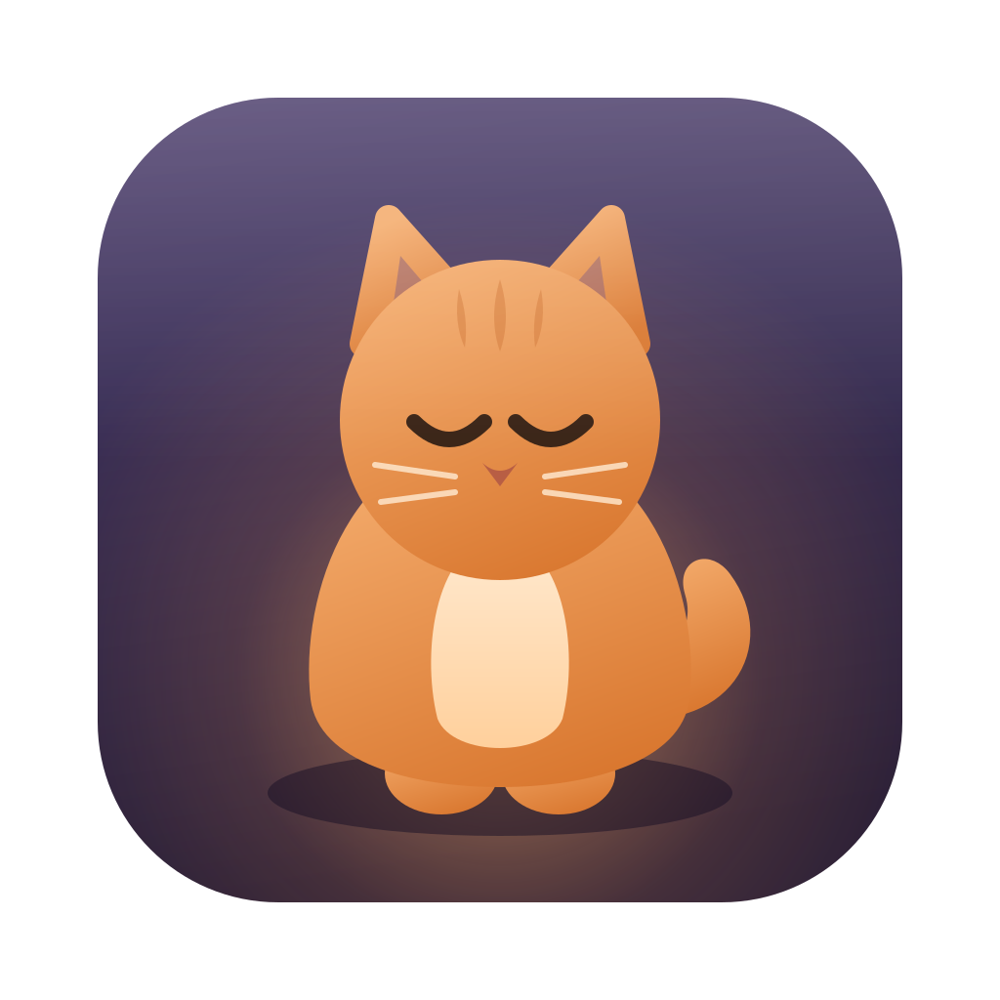
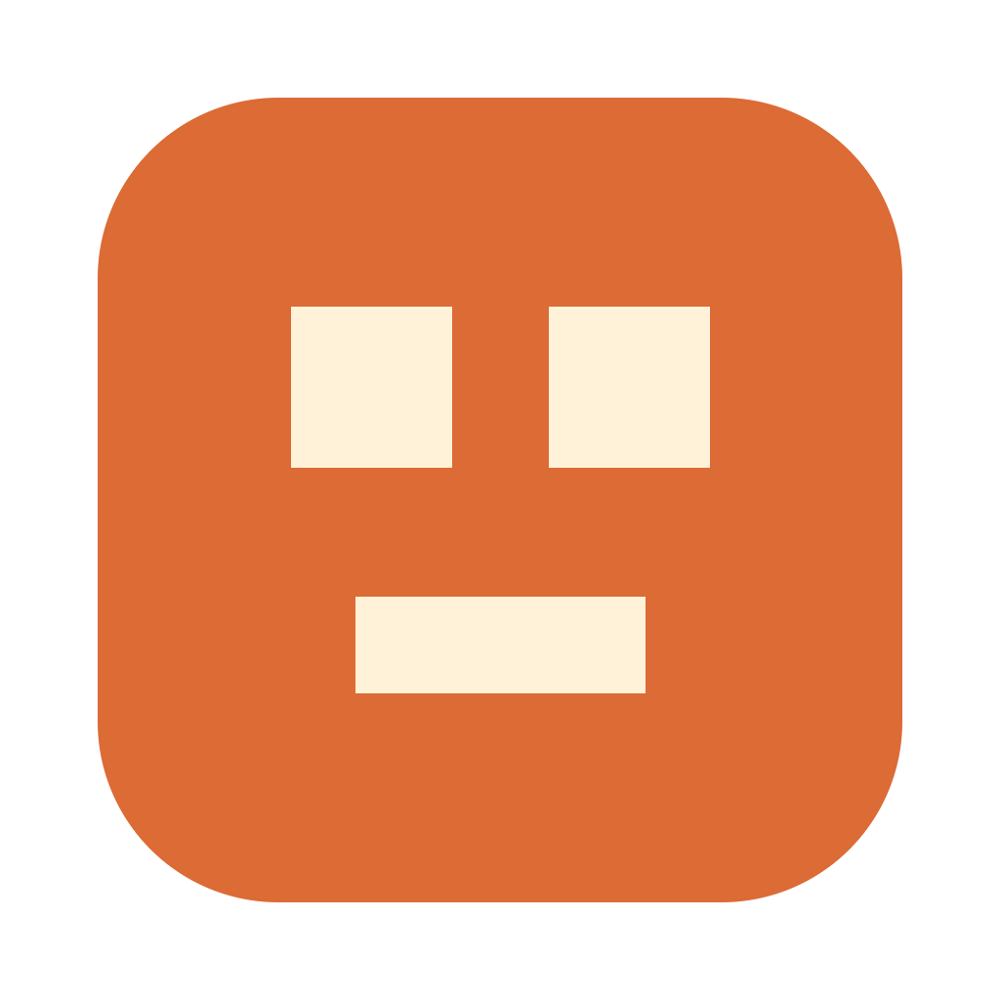

现状 · 猫猫庭院
v1 只调了「节奏」（间距/字阶/基线），前后差异过小——被打回是对的。v2 落到结构逻辑：先裁决每个区块显示什么、不显示什么、被裁的信息去哪（§3 信息架构表），再用组件三级权重制让形式与逻辑统一——主操作填充、次操作色块、工具幽灵，一眼分层；列表回归日系「细线+留白」标准。全部用真渲染（真 index.html + renderer + 场景引擎 + 提案层）展示前后。方案未动产品代码；品牌图标（§1）为已实施项。
品牌识别的第一纪律是「同一个形象出现在所有触点」，第二纪律是「每个触点遵守所在平台的规范」。glyph（极简猫脸 ）全站唯一；但 App 图标不能是"贴纸"——按当代 App 图标标准（日系主流审美：LINE / Mercari / PayPay 一路的满铺圆角方、纯扁平、无描边无投影）重制：Big Sur 网格 824/1024、r185 圆角（SDF 抗锯齿边缘），品牌橙满铺，glyph 定比居中（占版面 52%）。顶栏内的像素小方牌保持原样——界面内的 chrome 与桌面图标各守各的规范，glyph 一致即统一。


触点清单：macOS Dock（icns，圆角边缘逐档 SDF 抗锯齿、glyph 硬边保像素味，16px 仍可辨）· Windows（ico，PNG 载荷多档）· 开发态 Dock（main.js 同步）· 顶栏（glyph 原生源头，保持像素小方牌形态）。
现状的问题不是「难看」，是「没有法」：留白出现 8/9/10/11/12/14/16 七种取值，字号 10.5～20 共九档，同一行里按钮 30px、chips 26px、徽章自然高。宪法把「允许的取值」收成短清单——一致性来自减少可选项，不来自逐处校对。
| 令牌 | 值 | 用途 |
|---|---|---|
--sp-2 | 8px | 行内元素间隙（按钮之间、chip 之间） |
--sp-3 | 12px | 组件内边距（卡片、工具条、单元格横向） |
--sp-4 | 16px | 区块左右呼吸（控制条 / 表区 / 状态栏统一左缘） |
| 规则：任何 CSS 里的留白必须取自 --sp-*；9/11/13 这类游离值一律吸附到最近令牌。全部区块共享同一条 16px 左缘线——左缘不齐是「散」感的第一来源。 | ||
| 令牌 | 值 | 角色 |
|---|---|---|
--fs-caption | 11px | 表头 / 状态栏 / 字段标签（信息的"注脚层"） |
--fs-body | 12.5px | 表体 / 详情值（阅读主体） |
--fs-ui | 13px | 按钮 / 区块标题（操作层） |
--fs-title | 14px | 名牌 / 卡片名（身份层） |
时间、日期、百分比一律 tabular-nums：等宽数字让「活跃/新建」两列真正成为可扫读的列，而不是长短抖动的碎片。字重只留 400/600 两档。 | ||
| 级 | 形式 | 高 | 语义 |
|---|---|---|---|
| 主操作 | 填充（porcelain=强调蓝填充白字 / yard=饱和橙木牌） | 32px | 此屏此刻最该按的那一个——每屏唯一（打开账号 / 复制交接信息） |
| 次操作 | 色块（浅灰 tonal，无边框 / 木牌） | 28px | 常用但非默认路径（新增 / 复制标识…） |
| 工具 | 幽灵（透明底，hover 才显形） | 24px | 维护与低频（路径 / 诊断 / 刷新 / 管理 / 顶栏动作） |
| 规则：按钮的视觉重量必须等于它的逻辑重要度——「形式与逻辑统一」的落点。同排控件取相邻档、垂直共线。日系参照：LINE/瑞穂系 App 的 primary-filled / tonal / text-button 三层制。 | |||
每条接缝只归一个元素画（上块的 border-bottom 即接缝，下块不再画 top）——现状已合规，写进宪法防回潮。动效只留一档 120ms cubic-bezier(0.2,0,0,1)，hover/选中反馈全站同节奏，prefers-reduced-motion 全部退光。键盘焦点环全站一致：porcelain 蓝 / yard 橙，2px 外扩——现状焦点态覆盖不全，这是可访问性欠账。
先裁决每个区块显示什么、不显示什么、被裁的信息去哪——这是「哪个地方显示什么」的答案；再落每处数值。原则：一个区块只回答一个问题，回答不了的信息搬去它该在的家。
| 区块 | 回答的问题 | 显示 | 不显示（去哪了） |
|---|---|---|---|
| 顶栏 | 这是什么软件、现在什么模式 | 品牌 · 模式胶囊 · 全局动作（幽灵级） | 任何账号/会话信息（→下方各区） |
| 呈现层 | 我有哪些账号、谁在干活 | 庭院=猫+名牌；经典=卡片（名/组/状态/额度条） | 路径、备注、时间戳（→名牌 tooltip / 弹窗） |
| 控制条 | 选中的账号是谁、能对它做什么 | 名牌+徽章 · 主操作 · 次操作 · 工具组 · 额度 chips | 额度明细（→本号 chip 展开）· 全院列表（→全院 chip 展开）· meta/路径（→tooltip） |
| 会话表 | 这个账号最近在干什么 | 标题(主导) · 活跃 · 项目 · 来源 | 新建时间——裁列（低价值于「活跃」，→详情字段簿） |
| 会话详情 | 选中这条的全部事实 + 带走它 | 字段簿（含新建/文件/标识）· 复制交接(主) · 次操作 | —（这里就是"全部事实"的家） |
| 状态栏 | 系统刚发生了什么 | 一行注脚级反馈 | 持久信息（不许驻留） |
| 项 | 现状 | 提案 | 为什么 |
|---|---|---|---|
| 动作按钮 | 带边框排排坐，与工作区按钮同重 | 幽灵级（透明底 hover 显形） | 顶栏是 chrome，不是操作面 |
| 模式切换 | 普通按钮「⇄经典」 | 胶囊高亮（终局=双段控件，需 DOM） | 模式是状态不是动作 |
| 项 | 现状 | 提案 | 为什么 |
|---|---|---|---|
| 操作分层 | 7 个同重量边框按钮堆一排 | 打开账号=填充32 · 新增=色块28 · | · 路径/诊断/刷新=幽灵24 · 管理=幽灵 | 视觉重量 = 逻辑重要度；分隔线成组 |
| 名牌 | 14px | 15px/650（此区第一视觉） | 控制条回答"这是谁" |
| 终局项 | 刷新/路径/诊断驻留条上 | 刷新→列表工具条；路径/诊断→管理菜单（需 DOM，§5） | 刷新作用于列表，就该住在列表旁——形式与逻辑统一 |
| 项 | 现状 | 提案 | 为什么 |
|---|---|---|---|
| 列 | 标题/活跃/新建/项目/来源 五列 | 裁掉「新建」列，四列 | 与「活跃」信息重复度高、决策价值低；事实仍在详情字段簿 |
| 行 | 行高不足、密挤 | 40px 行高 · 发丝线 · 悬停轻染 | 扫读密度让位于可读性（日系表格标准） |
| 层级 | 五列同色同重 | 标题 13/600 主色；其余 12 退灰 tabular | 一行只有一个主角 |
| 搜索框 | 边框输入框 | tonal 沉底、28px | 工具静默，内容发声 |
| 项 | 现状 | 提案 | 为什么 |
|---|---|---|---|
| 名册卡内层级 | 名/组/状态趋同 | 名 13.5/650 > 组 11 > 状态 11.5 三级灰 > 额度条 4px | 卡片 3 秒判断：谁、哪组、什么状态 |
| 详情字段簿 | 标签值粘连 | 标签 10.5 灰 / 值 12.5，10-2 节奏 | 字段簿是"档案"，要能逐条落目 |
| 详情动作 | 五钮同重 | 复制交接=填充32 唯一主操作；其余色块28 | 本区的"带走"动线只有一条 |
| 状态栏 | 与正文同灰度 | 11px 三级灰注脚 | 反馈不抢工作面 |
下面四格都是真渲染：真 index.html + 真 renderer.js + 真场景引擎（样例数据驱动）。右列多挂一层 proposal.css（即 §2/§3 的全部数值），这就是采纳后的实际长相。可滚动、可点击。
暗色核对（新开页）：现状·经典·暗 · 提案后·经典·暗 · 现状·庭院·暗 · 提案后·庭院·暗
① 控制条：右边一排同重量边框按钮 → 填充主钮 + 色块次钮 + 幽灵工具组四级分层；② 会话表：五列密表 → 四列细线表（「新建」列被裁进详情），行高 40、标题主导、悬停轻染；③ 顶栏：边框按钮 → 幽灵化 + 模式胶囊；④ 详情：五个同重按钮 → 唯一填充主操作；⑤ 搜索框沉底 tonal。若右列与左列看不出区别，即为本方案不合格。
CSS 可收编部分（权重制/裁列/字阶/幽灵化）拍板后一次提交并入 styles.css/yard.css；另有两处「终局项」需要小幅 DOM 改动，单独一小提交：
① 令牌与分区数值按 §2/§3 并入原声明处（不留 override 层）；② yard 皮肤权重块并入 yard.css；③ 「新建」列裁除在模板删列（而非 CSS 隐藏），详情字段簿保留新建时间；④ DOM 终局项 A：刷新按钮迁入会话工具条（作用于列表就住在列表旁）；DOM 终局项 B：路径/诊断并入「管理」菜单、顶栏模式切换换成真正的双段控件；⑤ 宪法机验化进 node --test，harness 双视图×双主题截图验收。
| 风险 | 评估 |
|---|---|
| 布局回归 | 低——不动 grid/结构，只动 padding/height/font；固定窗口下无断点交互 |
| 皮肤冲突 | 低——porcelain/yard 分层覆写各自令牌，已在真渲染双皮肤验证 |
| 可读性 | 元数据降灰一级需在暗色下复核对比度（提案链接里给了暗色四页） |
产品代码未改动。proposal.css 只被 docs/design/after.html 引用；品牌图标（§1）是本轮唯一已实施项。